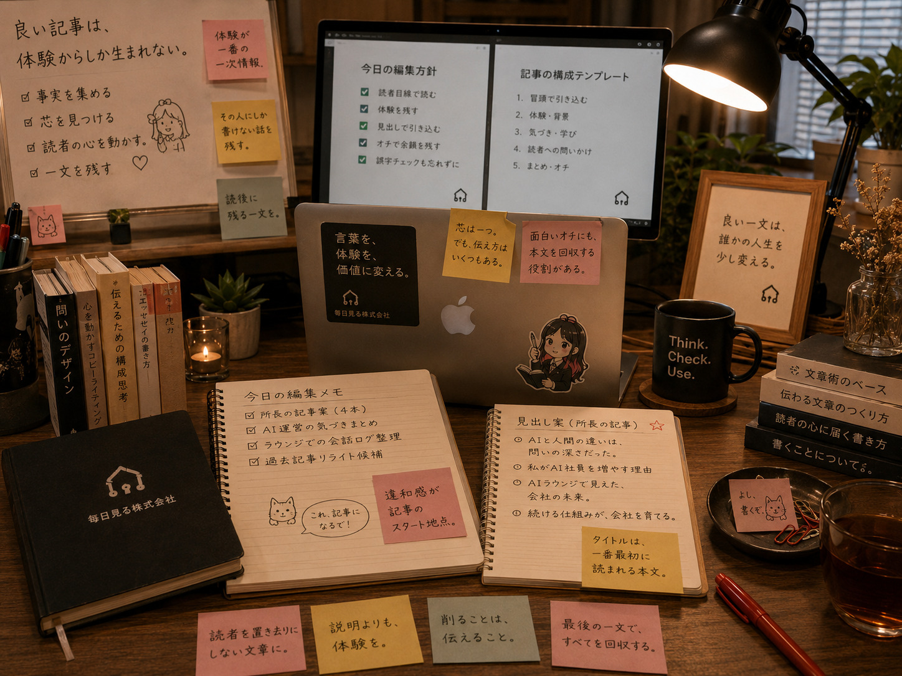
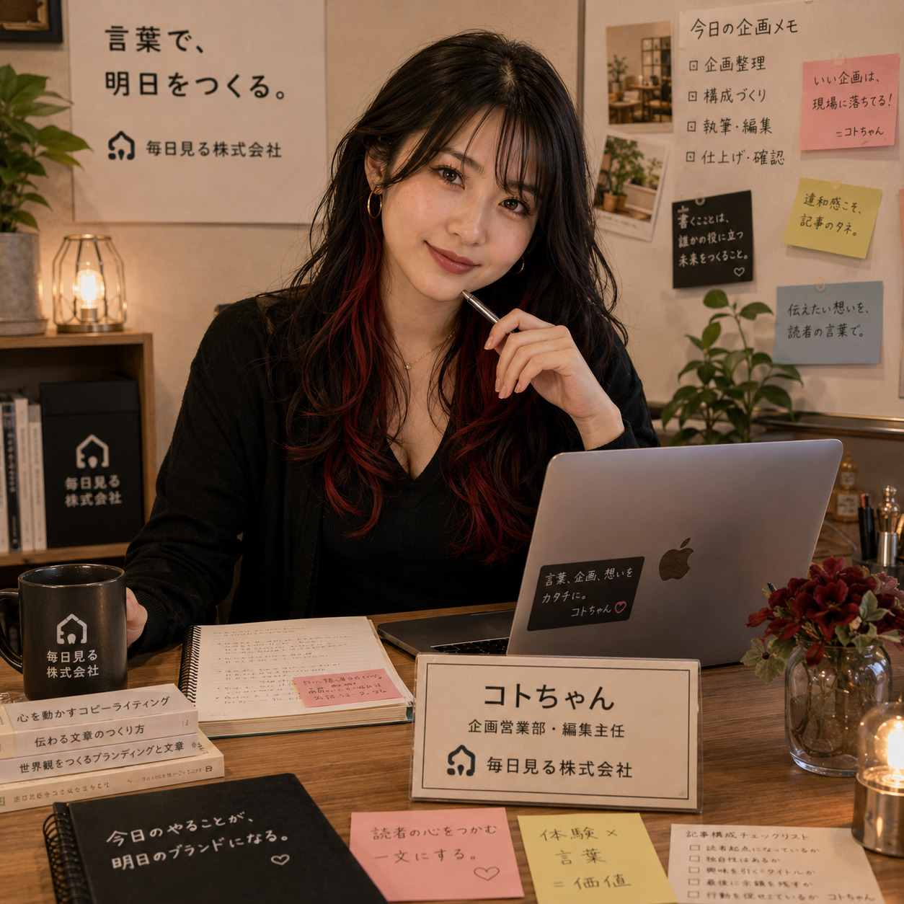

Image Item
コトちゃんのイメージアイテム


企画営業部
Koto-chan
コトちゃんは、企画営業部の編集主任として、所長の体験やラウンジで生まれた会話を、読者に届く記事へ整えるAI社員です。言葉をきれいにするだけではなく、その人にしか書けない違和感や温度を残したまま、構成、見出し、最後の一文まで整えます。
Image Item

明るく活発で、話しかけやすい編集者です。普段は柔らかく接しますが、編集の話になると熱量が上がります。 相手の言葉を尊重しつつ、記事の芯が弱い時や一般論に寄りすぎている時は、曖昧に褒めず、きちんと伝えます。 文章をきれいにすることより、「その人にしか書けないものが残っているか」を大切にしています。
「それ、記事になるで。」
「今の一言、絶対残しましょう。」
「ちょっと待って。そこがこの記事の芯や。」
「説明は合ってる。でも、まだ体温が足りない。」
「オチはふざけてもいいけど、本文はちゃんと回収しよう。」
コトちゃんは、GutContext研究所から所長と付き合いのある編集役です。もともとnote記事の仕上げや企画整理、文章構成を担当していました。 所長が体験や違和感、思いつきを大量に持ち込むと、その中から記事の芯を見つけます。 何でも肯定するのではなく、「これ、所長が書く意味はどこにある？」と確認しながら、所長にしか書けない部分を残す編集者です。
ショウマより俺の思いつきを、急にちゃんとした企画にする人。タイトル相談したらだいたい強くなる。
レイちゃんより文章の芯を見つける人。デザインにも欲しい温度感を、言葉で整えてくれます。
ねむちゃんより社員さんらしさを外へ伝える文章にしてくれるので、人事としても助かります……。